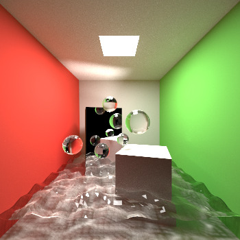
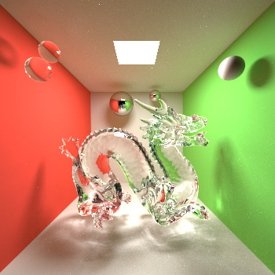
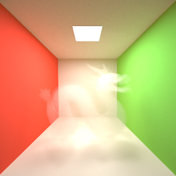
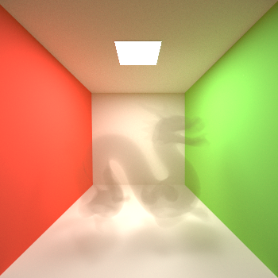

Graphics Pipeline (Rasterizer) C++ implementation.
Ray Tracing C++ implementation.
Physically based renderer (Path Tracing, C++):


Participating media (high scattering vs high absorption):


OpenGL Shaders:
Adding unique IDs to EventGraph Nodes via Unreal Core Engine for an accessibility project: